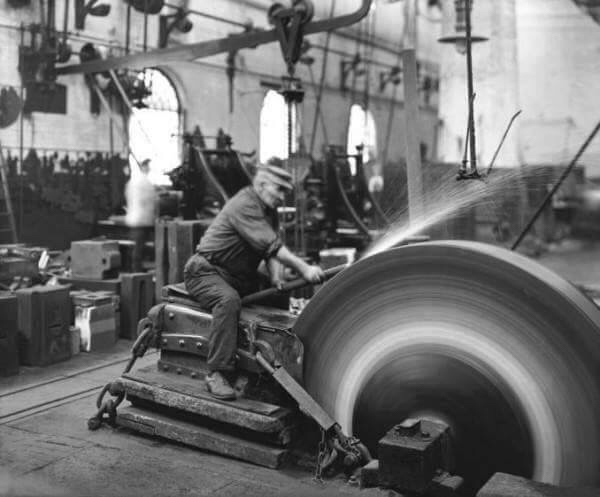
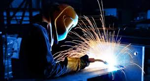

Más de 25 años de experiencia en el desarrollo de proyectos y la satisfacción de nuestros clientes son el principal aval de nuestro trabajo.El noble oficio de la herrería profesionalizado permite labrar el hierro con las características de un proceso artesanal llevando al detalle la terminación, logrando al mismo tiempo resultados únicos con un elevado nivel de calidad. Desarrollamos manufacturas clásicas con diseños personalizados, rejas, muebles, estructuras, artículos decorativos únicos, trabajos en obra y terminaciones arquitectónicas en barandas y barrales que aportan personalidad a los distintos ambientes. Nos especializamos también en reparaciones y restauración en general, de rejas y carpintería metálica.
 